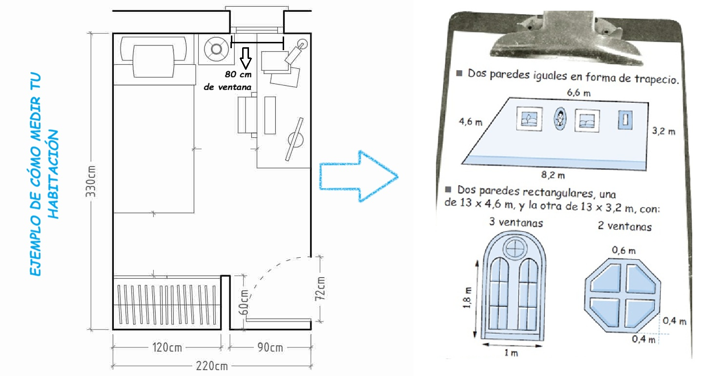
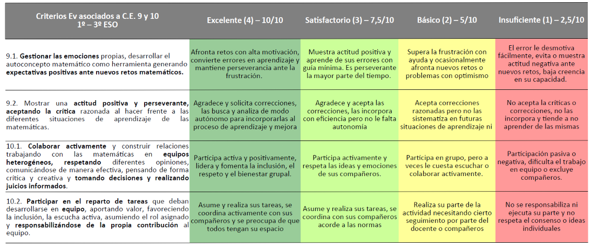

¿Qué vamos a hacer?¿Cómo?¿Cuándo?
SESIÓN 1 (INTRODUCCIÓN E INICIO)
Querido alumnado de 1º, ¡bienvenido/as a esta Actividad Evaluable en la que vais a reformar (figuradamente, de momento) vuestra habitación!
- ¿Qué vamos a hacer?
Vamos a calcular cuanto dinero en pintura y materiales os costaría pintar vuestra habitación en vuestro color preferido. Y también sabremos extrapolar ese resultado a otras habitaciones cualquiera. Los cálculos los haréis en pareja, os daré unos videos y pequeñas herramientas y consejos y para rematar los resultados nos los enseñaréis al resto de la clase con una viñeta colorida que haremos con los ordenadores, y con un pequeño podcast que grabaremos. Los mejores irán a la Radio del IES.
- ¿Cómo?
Primero vais a calcular lo que miden las paredes y techo de vuestra habitación, o de una genérica, y todos los elementos o figuras sencillas que están presentes en ella: puertas, ventanas, vidrieras, etc. Con ello haréis un pequeño esquema de las habitaciones como el que sigue:

Luego calcularemos lo que miden las zonas a encintar en cada pared, y para ello tendréis que hallar los perímetros. Después, usando la tabla de fórmulas calcularemos las superficies a pintar en paredes y techo, restando ventanas y puertas.
Tras eso, escogeremos colores y acabados, entre varias opciones de pintura. Tendremos que mirar para cuantos m^2 da cada bote, y su precio, para saber qué dinero os cuesta en €/m^2. En cuanto tengáis esa parte, será fácil saber el precio total de la cinta de pintor y la pintura escogida.
Con todo eso podréis rellenar la plantilla de resultados finales que cubriremos en ordenadores (si la sala INFO02 está libre) o con las tablets de INFO03. Y finalmente grabaremos ese mismo día un podcast por cada pareja donde explicaréis cómo ha sido el proceso: qué hicisteis, en qué orden, qué colores y tipo de pintura escogisteis, por qué, y qué valoráis que habéis aprendido.
- ¿Cuándo?
Desde hoy hasta dentro de unas 4 o 5 sesiones. Todo dependerá de cómo funcione vuestro equipo y de que veáis o no los vídeo y recursos digitales en vuestra casa para repasar y preparar tareas
- ¿Cómo se pone la nota?
Se evalúan varias cosas:
| PRODUCTO | INSTRUMENTO | COMPETENCIAS ESPECÍFICAS MATES |
| FORMULARIO DE ÁREAS | LISTA DE COTEJO | 3,8 |
| ESQUEMAS DE ÁREAS Y PERÍMETROS Y CÁLCULOS | ESCALA DE VALORACIÓN (1 A 10) | 1-6 |
| INFOGRAFÍA DE RESULTADOS, PODCAST | ESCALA DE VALORACIÓN (1 A 10) | 4,7,8, |
| AUTOEVALUACIÓN DE PARTICIPACIÓN | RÚBRICA | 9,10 |
A continuación os dejo la rúbrica de autoevaluación que haremos al final:
